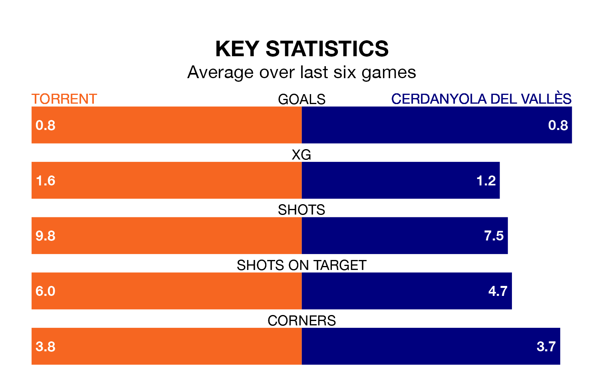

Cerdanyola del Vallès make the journey to play Torrent on early Sunday looking to pick up points to end their three-game losing streak.
Cerdanyola del Vallès's struggles have left them with five points from their last six Segunda División RFEF Group 3 matches, while their opponents have earned six from a possible 18.
Cerdanyola del Vallès are 15th in the table after 17 games, of which they have won four and drawn six, earning 18 points.
Torrent are eight places ahead of the away side in seventh, with six wins and five draws putting them on 23 points.
With 18 goals in 17 games so far this season, the hosts are scoring at below the league average rate with 1.1 goals per game. But they are conceding fewer than average too, letting in 19 goals at a rate of 1.1 per game.
Cerdanyola del Vallès, meanwhile, are average scorers, with 1.2 goals per game. They have conceded 1.6 goals per game.
Torrent's last match was on January 7, a 2-0 win against Penya Independent.
Cerdanyola del Vallès lost 3-0 against SD Formentera last time out, also on January 7.
Updated: 10:50, 10/01/24